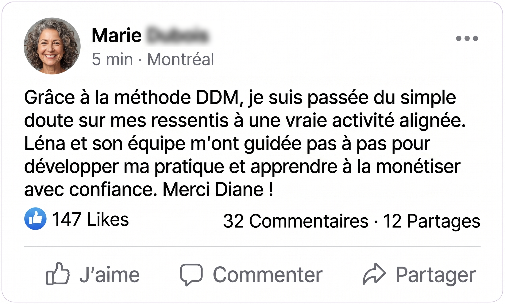
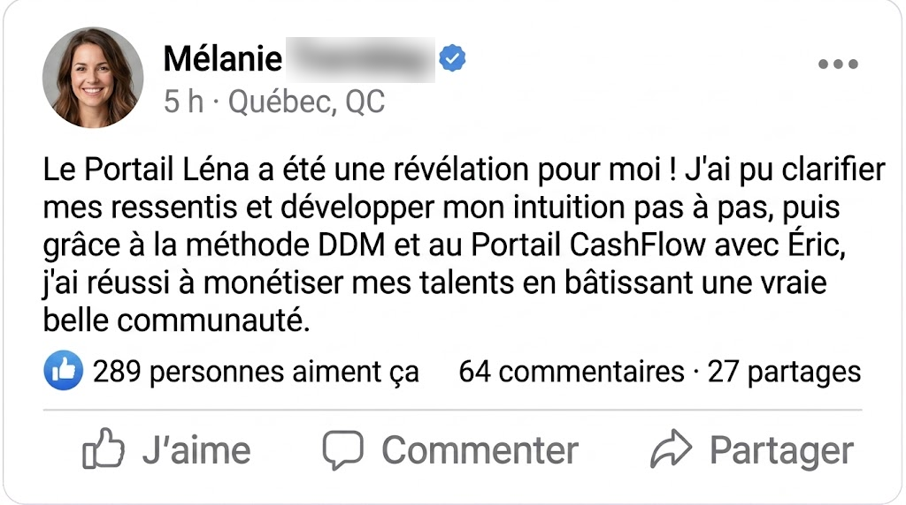
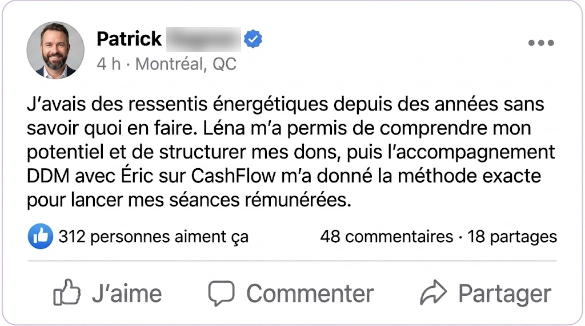
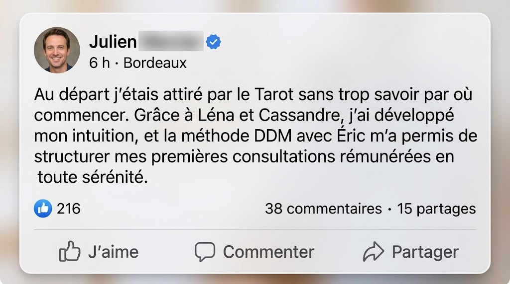
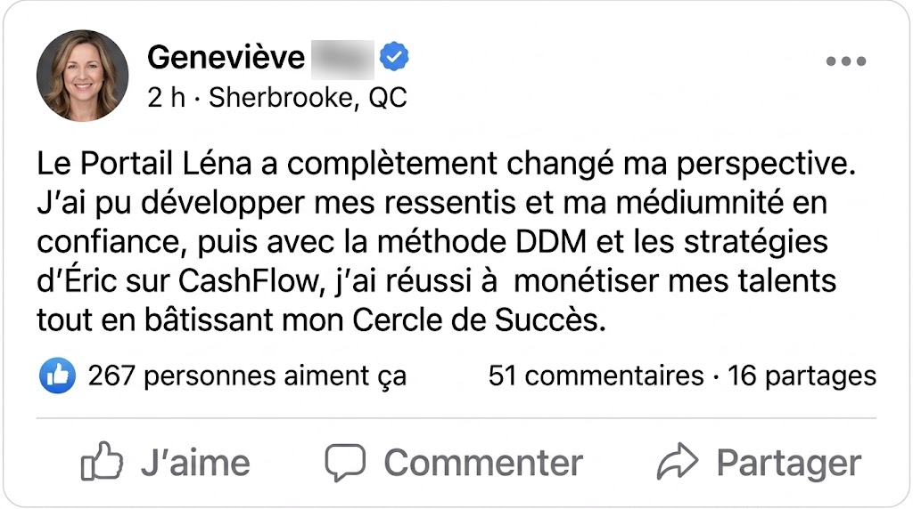
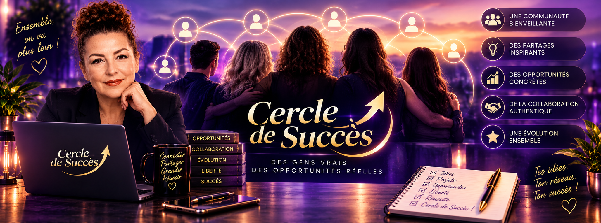
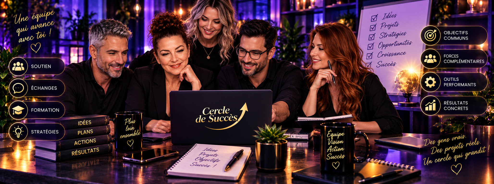
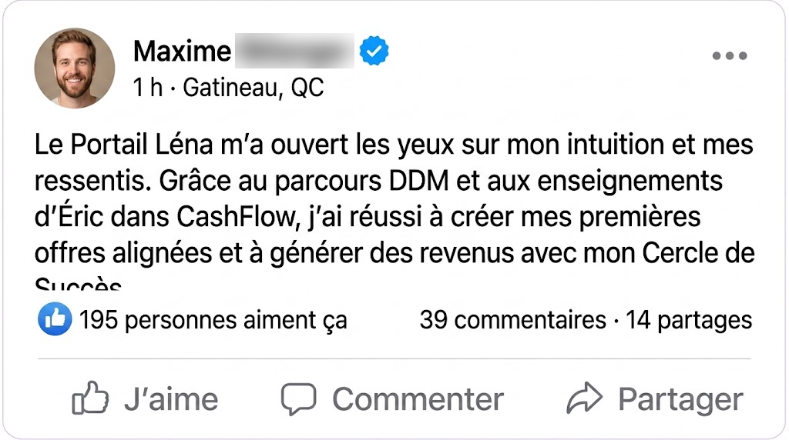
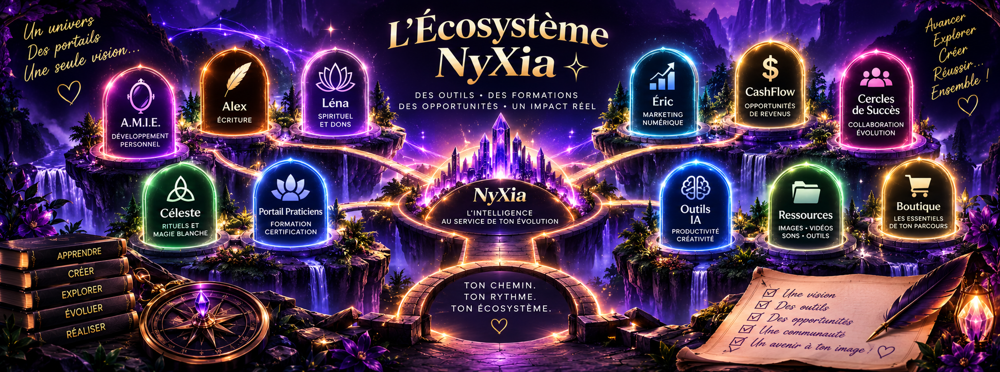
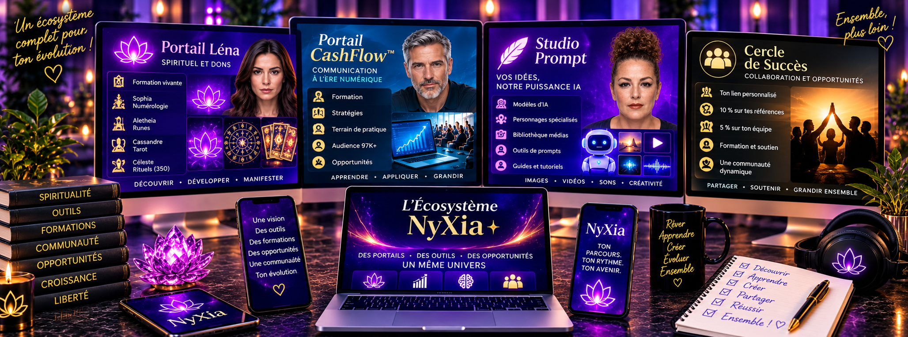

NyXiaL'univers
NyXiaL'univers
NyXiaL'univers
NyXiaL'univers
Le Quiz est la première étape avant la prise de rendez-vous avec un membre de notre équipe.
Tu ressens peut-être depuis longtemps qu’il y a quelque chose en toi. Une intuition particulièrement forte. Des ressentis que tu as du mal à expliquer. Une attirance pour le Tarot, les nombres, le pendule, les runes, les énergies ou le monde spirituel. Peut-être même que certaines choses te semblent naturelles… sans que tu saches vraiment si tu peux leur faire confiance, comment les comprendre ou comment aller plus loin. Et si, au lieu de chercher encore des réponses un peu partout, tu pouvais entrer dans un environnement conçu pour t’aider à Découvrir, Développer et éventuellement Monétiser ce qui te correspond réellement? Bienvenue dans Portail Léna.

C’est justement là que beaucoup de personnes restent bloquées.
Elles ressentent quelque chose, mais se demandent :
Pourquoi est-ce que je ressens certaines personnes ou certains endroits aussi fortement?
Pourquoi suis-je autant attirée par certaines pratiques?
Est-ce que je pourrais apprendre le pendule? La médiumnité? La numérologie? Le Tarot? Les runes?
Est-ce qu’une faculté peut réellement se développer avec de la pratique?
Tu n’as pas besoin d’arriver en disant : « Je veux devenir numérologue. »
Tu peux simplement arriver avec : « Je veux découvrir ce qui me correspond. »

Léna est au cœur du portail.
Elle n’est pas simplement là pour répondre à quelques questions.
Elle devient ta formatrice principale dans un parcours consacré à la découverte et au développement de différentes facultés psychiques, spirituelles et intuitives.
Sa matière de formation explore notamment les corps subtils, les chakras et l’aura, puis différentes facultés comme la clairvoyance, la clairaudience, l’intuition, la télépathie, la médiumnité, les ressentis énergétiques, le magnétisme et la radiesthésie.
La philosophie derrière cet apprentissage est importante : tu ne fais pas qu’apprendre des concepts. Tu expérimentes.
La matière source elle-même présente une grande diversité de facultés et insiste sur leur développement par l’expérimentation et la pratique.

Dans une formation traditionnelle, tu regardes une vidéo. Tu lis ton document. Tu fais ton exercice.
Et lorsque tu te poses une question à 22 h 43… Eh bien, tu écris ta question quelque part et tu espères t’en souvenir demain. 😉
Tu avances dans ta formation à ton rythme. Tu apprends. Tu expérimentes. Tu observes.
Puis tu peux retrouver ton personnage dans son espace de conversation pour approfondir ce que tu es en train d’apprendre.
La formation transmet la connaissance. Le personnage accompagne l’expérience.
Et plus tu avances, plus tu peux commencer à comprendre ce qui t’attire réellement.


C’est la première mission de Portail Léna.
Tu vas pouvoir explorer différents univers, mieux comprendre certaines perceptions et surtout expérimenter.
Parce qu’entre lire : « Voici ce qu’est l’intuition » et commencer à reconnaître comment toi, tu vis tes propres ressentis… il y a tout un monde.

La radiesthésie fait partie des matières pouvant être explorées avec Léna.
La matière pédagogique aborde notamment le rôle du pendule et d’autres instruments radiesthésiques ainsi que l’importance du ressenti et de la neutralité dans cette pratique.
Tu peux donc découvrir progressivement cet univers au lieu de simplement acheter un pendule et de te demander ensuite :
Et ce n’est qu’un exemple parmi les nombreuses directions que ton parcours peut prendre.

Portail Léna n’a pas été conçu autour d’un personnage qui prétend tout enseigner.

Les nombres t’ont toujours fascinée? Sophia t’accompagne dans l’univers de la numérologie.
Son rôle n’est pas simplement de te donner une interprétation toute faite.
Elle est là pour t’aider à apprendre le langage des nombres, comprendre les calculs, les cycles et les différentes interprétations afin que tu développes progressivement tes propres connaissances.

Avec Aletheia, tu entres dans l’univers des runes et du Futhark.
Tu peux apprendre leur symbolisme, leur langage et progressivement comprendre comment construire une lecture plutôt que simplement mémoriser une liste de significations.

Cassandre t’accompagne dans l’apprentissage du Tarot.
Mais apprendre le Tarot ne signifie pas seulement connaître la définition de chaque carte.
L’objectif est progressivement de comprendre les cartes ensemble, leurs interactions, leurs symboles et la manière dont une lecture peut devenir cohérente.

Et puis il y a Céleste… Son territoire est immense.
Céleste explore avec toi les arts divinatoires et les différentes mancies.
Tu peux découvrir des pratiques auxquelles tu n’aurais peut-être jamais pensé et comprendre leurs particularités avant de décider lesquelles tu souhaites approfondir.

Nous ne voulions surtout pas transformer cette collection en : « Prends cette bougie. Allume-la. Fais ceci. Terminé. »
Parce qu’un rituel possède une logique.
Et surtout… Quelle est ton intention?
L’objectif est donc d’aller progressivement vers la compréhension du rituel, de ses correspondances et de sa construction.
Léna peut t’aider à découvrir.
Sophia peut t’ouvrir le langage des nombres.
Aletheia celui des runes.
Cassandre celui du Tarot.
Céleste celui des mancies et des rituels.
Et ce serait complètement contraire à l’objectif du Portail Léna.
Nous ne voulons pas que tu sortes d’ici en sachant seulement écrire : « Fais-moi une lecture de Tarot. »
L’intelligence du portail devient un outil pédagogique autour de ta formation.
Parce que le véritable actif que tu développes… c’est toi.
Tes connaissances. Ta compréhension. Ton expérience. Ta façon d’interpréter. Ta pratique.


Tu as DÉCOUVERT quelque chose.
Tu as commencé à le DÉVELOPPER.
Et peut-être qu’un jour une nouvelle pensée apparaît :
Peut-être aimerais-tu proposer des consultations. Créer une offre d’accompagnement. Développer une présence sur les réseaux sociaux. Ou simplement apprendre comment transformer progressivement tes nouvelles connaissances en projet.
C’est exactement pour cette raison que le parcours ne s’arrête pas à Portail Léna.

Éric n’est pas là pour t’enseigner la spiritualité.
Il intervient lorsqu’une autre compétence devient nécessaire : apprendre à communiquer à l’ère numérique.
Parce qu’avoir une compétence ne signifie pas automatiquement savoir la présenter.
Et publier continuellement : « J’offre des consultations, écris-moi en privé » n’est pas une stratégie de communication. 😉
Créer du contenu qui suscite des interactions. Ces interactions ouvrent des conversations. Ces conversations permettent de créer des relations. Les relations construisent la confiance. Et la confiance peut éventuellement ouvrir une opportunité lorsqu’une personne possède réellement un besoin auquel tu peux répondre.

Une partie de l’enseignement d’Éric s’appuie sur trois ouvrages écrits par Diane Boyer :
Remarque, s’intéresse et décide d’interagir.
De communication peuvent être intégrés dans une stratégie de développement.
Où les relations commencent de plus en plus souvent derrière un écran.
Ces ouvrages sont également disponibles en version papier.

C’est l’une des forces particulières de Portail CashFlow.
Nous ne voulons pas t’apprendre comment créer des interactions pour ensuite te laisser seule devant une page où personne ne te connaît.
L’écosystème donne accès à un terrain permettant de mettre en pratique la communication numérique auprès d’une audience cumulée de plus de 97 000 personnes.
Tu apprends à communiquer. À publier. À observer les réactions. À participer aux conversations. À développer des relations. À reconnaître les besoins.

Studio Prompt devient ton atelier de travail avec l’intelligence artificielle.
Parce qu’avoir accès à une IA extraordinaire ne sert pas à grand-chose si tu ne sais pas comment lui expliquer clairement ce dont tu as besoin.
Et nous avons poussé le concept encore plus loin.

Les personnages peuvent y intervenir dans leur domaine pour t’aider à construire des prompts adaptés à ton travail.
Par exemple, Léna pourrait t’aider à structurer un prompt pour :
préparer une réponse claire lors d’une consultation spirituelle;
créer un contenu spirituel éthique et rassurant;
structurer une offre d’accompagnement spirituel claire;
ou encore mieux organiser certaines communications liées à ton activité.
Tu ne demandes plus seulement à l’IA : « Écris-moi un post Facebook sur la spiritualité. »

Et plusieurs autres modèles utiles au travail numérique.
Studio Prompt les rassemble pour te permettre de choisir et d’utiliser différents outils selon ce que tu souhaites accomplir.
Publications. Idées. Structure d’une offre. Communication avec un client. Réflexion. Prompts spécialisés.

Et parce qu’une publication ne se résume pas à du texte…
Studio Prompt comprend également une bibliothèque d’images, de vidéos et de sons pour t’aider à produire des contenus de meilleure qualité.


Tu n’as pas nécessairement besoin d’attendre d’être devenue experte en Tarot, en numérologie ou dans une autre discipline avant de pouvoir mettre en pratique ce qu’Éric t’enseigne.
Pendant ton apprentissage avec CashFlow et Studio Prompt, un lien personnalisé avec une empreinte unique peut t’être attribué dans le cadre du programme.
Ce lien permet de relier à toi les recommandations admissibles que tu effectues dans l’écosystème NyXia.
Une personne que tu rencontres pourrait avoir besoin d’un autre produit ou d’un autre portail de l’écosystème NyXia.
Ton apprentissage de la communication peut donc être mis en pratique à travers l’ensemble de l’écosystème.
Lorsque quelqu’un découvre un produit grâce à ta recommandation personnelle et qu’une vente admissible est attribuée à ton lien selon les modalités du programme, tu peux recevoir : 10 % de commission.
Et remarque bien ce que nous ne te demandons pas de faire : spammer tes amis avec ton lien. Ce serait exactement le contraire de ce qu’Éric enseigne.
Créer une interaction → ouvrir une conversation → bâtir une relation → comprendre un besoin → recommander lorsque c’est pertinent.
Ton lien sert ensuite à attribuer la référence.

Éric peut également t’apprendre à développer progressivement ton équipe de Cercle de Succès.
Tu ne te limites alors plus à tes propres recommandations. Tu apprends aussi à accompagner d’autres personnes dans cette approche relationnelle.
Selon les modalités du programme, les ventes admissibles générées par ton équipe peuvent te permettre de recevoir : 5 % de commission.
Tu disposes donc de deux possibilités complémentaires.
Les commissions ne constituent évidemment pas une garantie de revenus : elles dépendent notamment de l’activité, des recommandations et des ventes admissibles réalisées selon les modalités du programme.
Tu découvres avec Léna. Tu développes avec tes formatrices. Tu apprends. Tu pratiques.
Et éventuellement, tu peux construire ta propre offre ou ton propre service autour d’une compétence réellement développée.
Tu apprends avec Éric. Tu pratiques ta communication. Tu utilises Studio Prompt. Tu crées des interactions. Tu développes des relations. Tu peux recommander l’écosystème NyXia.
Tu peux générer 10 % sur tes références personnelles admissibles. Puis apprendre à construire une équipe permettant de générer 5 % sur les ventes admissibles de ton Cercle de Succès.
Tu n’as donc pas nécessairement à attendre la fin de ton apprentissage pour commencer à mettre en pratique le M de DDM.


PORTAIL LÉNA — Léna → Explorer tes facultés → Expérimenter → Découvrir ce qui te correspond
ATELIER DE DÉVELOPPEMENT — Léna (Facultés psychiques et spirituelles) / Sophia (Numérologie) / Aletheia (Runes) / Cassandre (Tarot) / Céleste (Mancies & rituels) → Formation Vivante → Apprentissage → Expérimentation → Développement d’une compétence
PORTAIL CASHFLOW™ — Éric → Communication à l’ère numérique → Studio Prompt → Plusieurs modèles IA → Bibliothèque images · vidéos · sons → Terrain de pratique 97K+ → Cercle de Succès → Développer ses propres offres et/ou recommander l’écosystème
DÉCOUVRIR → DÉVELOPPER → MONÉTISER

Tu ne rejoins pas simplement une série de vidéos. Tu entres dans un environnement comprenant notamment :
Portail Léna et sa Formation Vivante
Léna et son parcours de découverte et de développement
Sophia et l’apprentissage de la numérologie
Aletheia et l’univers des runes
Cassandre et l’apprentissage du Tarot
Céleste, les mancies et l’univers des quelque 350 rituels
Portail CashFlow™ avec Éric
Une formation en communication à l’ère numérique
Un terrain de pratique auprès d’une audience cumulée de 97K+
Portail Studio Prompt
Différents modèles d’intelligence artificielle
Des personnages spécialisés pour t’aider à structurer tes prompts
Une bibliothèque d’images, de vidéos et de sons
Ton lien personnalisé dans le cadre du Cercle de Succès
La possibilité de recevoir 10 % sur tes références personnelles admissibles
La possibilité d’apprendre à développer ton Cercle de Succès et de recevoir 5 % sur les ventes admissibles de ton équipe, selon les modalités du programme
Peut-être que tu sais déjà exactement ce que tu veux développer. Ou peut-être pas.
Et c’est parfaitement compatible avec Portail Léna.
Parce que nous ne voulons pas commencer par te dire ce que tu devrais devenir. Nous voulons commencer par mieux comprendre ce que tu recherches.
C’est pour cette raison que tu ne trouveras pas ici un bouton : ACHETER MAINTENANT.
Le Quiz nous permet de mieux comprendre où tu en es, ce qui t’attire et ce que tu aimerais développer.
Une fois cette première étape complétée, tu pourras poursuivre vers une prise de rendez-vous avec un membre de notre équipe.
Ce rendez-vous permet d’échanger avec toi sur ton parcours, tes objectifs et ce que tu recherches afin de déterminer si Portail Léna et son écosystème correspondent réellement à ce que tu souhaites entreprendre.
Pas besoin d’avoir toutes les réponses avant de venir nous parler. C’est justement pour ça qu’on commence par quelques questions.
Oui. C’est précisément l’une des raisons d’être du premier D de DDM : Découvrir. Le portail est conçu pour permettre d’explorer avant de décider vers quelle discipline tu souhaites éventuellement aller.
Non. Le parcours peut commencer par la découverte et évoluer progressivement vers des apprentissages plus spécialisés.
Non. Les personnages font partie d’un environnement de Formation Vivante. L’objectif n’est pas que l’intelligence artificielle développe une compétence à ta place, mais qu’elle accompagne une structure d’apprentissage.
La radiesthésie fait partie des matières couvertes par l’univers de Léna. La matière pédagogique aborde notamment le pendule comme instrument permettant d’amplifier les mouvements utilisés dans la pratique radiesthésique.
Non. Monétiser est une possibilité, pas une obligation. Une personne peut parfaitement utiliser Portail Léna pour son développement et son apprentissage personnels.
CashFlow prend le relais lorsque tu souhaites apprendre à communiquer à l’ère numérique, créer des interactions, développer des relations et éventuellement mettre en marché une compétence ou une offre.
C’est un environnement destiné à mieux travailler avec différents modèles d’intelligence artificielle et à apprendre à structurer des prompts adaptés à tes besoins. Il comprend également des ressources créatives pour les images, vidéos et sons.
Dans le cadre du programme Cercle de Succès, les références et ventes admissibles peuvent générer les commissions prévues par le programme : 10 % pour une référence personnelle admissible et 5 % sur les ventes admissibles provenant de ton équipe, selon ses modalités. Il ne s’agit pas d’une garantie de revenus.
Non. L’approche enseignée par Éric repose justement sur la communication, les interactions, les conversations, les relations et la confiance, plutôt que sur l’envoi massif de liens.
Parce que nous préférons commencer par comprendre ton parcours et ce que tu recherches. Tes réponses permettent de préparer la discussion avec le membre de l’équipe qui te rencontrera.
Et tu n’as pas besoin de le savoir aujourd’hui.
Tu peux commencer par Découvrir. Puis Développer ce qui te ressemble.
Et si tu souhaites un jour aller plus loin, tu pourras apprendre à Monétiser ce que tu as construit.
Entre les deux, tu auras appris. Expérimenté. Pratiqué.
À la fin du Quiz, poursuis vers la prise de rendez-vous avec un membre de notre équipe.